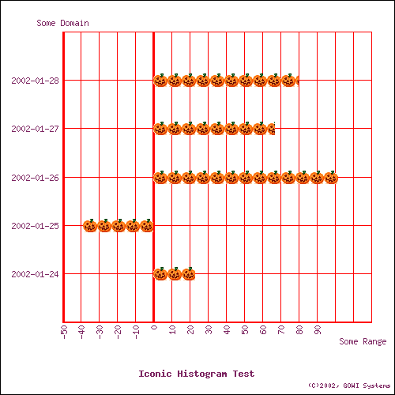
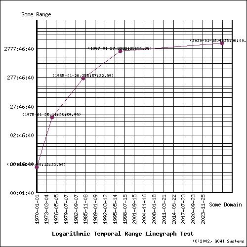
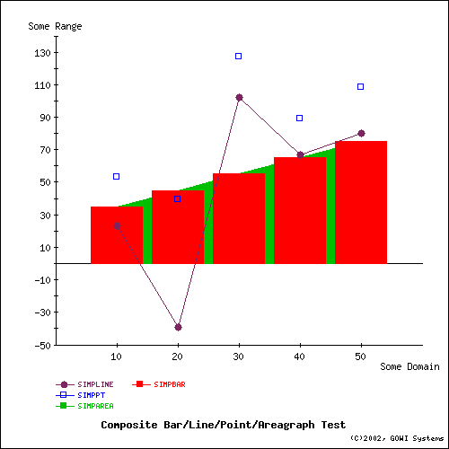
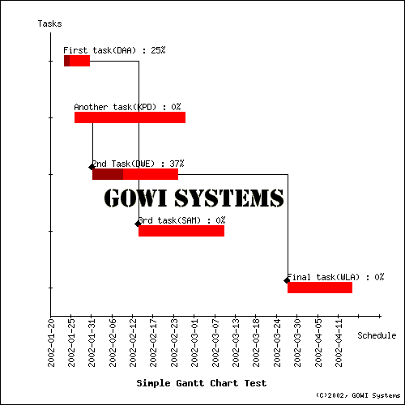

| |
Iconic Histogram with Imagemap
$sth = $dbh->prepare(
"select histogram, imagemap from symline
where WIDTH=500 AND HEIGHT=500 AND X_AXIS='Some Domain' and
Y_AXIS='Some Range' AND
TITLE='Iconic Histogram Test' AND SIGNATURE='(C)2002, GOWI Systems' AND
FORMAT='PNG' AND ICON='pumpkin.png' AND
MAPNAME='iconhisto' AND SHOWGRID=1 AND GRIDCOLOR='red' AND
TEXTCOLOR='newcolor' AND
MAPSCRIPT='ONCLICK=\"alert(''Got X=:X, Y=:Y'')\"' AND
MAPURL='http://www.gowi.com/cgi-bin/sample.pl?x=:X&y=:Y&z=:Z&plotno=:PLOTNUM'
AND MAPTYPE='HTML'");
$sth->execute;
$row = $sth->fetchrow_arrayref;
dump_img($row, 'png', 'iconhisto');

Logarithmic Temporal Range Linegraph
$dbh->do('create table logtempline (xdate date, y interval)');
$sth = $dbh->prepare('insert into logtempline values(?, ?)');
for ($i = 0; $i <= $#xdate2; $i++) {
$sth->execute($xdate2[$i], $ytime2[$i]);
}
$sth = $dbh->prepare(
"select linegraph, imagemap from logtempline
where WIDTH=500 AND HEIGHT=500 AND
TITLE='Logarithmic Temporal Range Linegraph Test' AND
SIGNATURE='(C)2002, GOWI Systems' AND
X_AXIS='Some Domain' AND Y_AXIS='Some Range' AND
X_ORIENT='VERTICAL' AND Y_LOG=1 AND
FORMAT='PNG' AND COLORS='newcolor' AND
SHOWGRID=1 AND SHOWVALUES=1 AND SHAPE='fillcircle' AND
MAPNAME='logtempline' AND
MAPURL='http://www.gowi.com/cgi-bin/sample.pl?x=:X&y=:Y&z=:Z&plotno=:PLOTNUM'
AND MAPTYPE='HTML'");
$sth->execute;
$row = $sth->fetchrow_arrayref;
dump_img($row, 'png', 'logtempline');

Composite Image
$sth = $dbh->prepare(
"select image, imagemap from
(select linegraph from simpline
where color='newcolor' and shape='fillcircle') simpline,
(select pointgraph from simppie
where color='blue' and shape='opensquare') simppt,
(select areagraph from complpa
where color='green') simparea,
(select barchart from complpa
where color='red') simpbar
where WIDTH=500 AND HEIGHT=500 AND
TITLE='Composite Bar/Line/Point/Areagraph Test' AND
SIGNATURE='(C)2002, GOWI Systems' AND
X_AXIS='Some Domain' AND Y_AXIS='Some Range' AND
FORMAT='PNG' AND
MAPNAME='compblpa' AND
MAPURL='http://www.gowi.com/cgi-bin/sample.pl?x=:X&y=:Y&z=:Z&plotno=:PLOTNUM'
AND MAPTYPE='HTML'");
$sth->execute;
$row = $sth->fetchrow_arrayref;
dump_img($row, 'png', 'compblpa');
print "compblpa OK\n";

Gantt Chart
$dbh->do(
'create table simpgantt (task varchar(30),
starts date, ends date, assignee varchar(3), pctcomplete integer,
dependent varchar(30))');
$sth = $dbh->prepare('insert into simpgantt values(?,?,?,?,?,?)');
for ($i = 0; $i <= $#tasks; $i++) {
$sth->execute($tasks[$i], $starts[$i], $ends[$i], $assigned[$i],
$pct[$i], $depends[$i]);
}
$sth = $dbh->prepare(
"select gantt, imagemap from simpgantt
where WIDTH=500 AND HEIGHT=500 AND
TITLE='Simple Gantt Chart Test' AND
SIGNATURE='(C)2002, GOWI Systems' AND
X_AXIS='Tasks' AND Y_AXIS='Schedule' AND
COLOR='red' AND LOGO='gowilogo.png' AND
MAPNAME='simpgantt' AND
MAPURL='http://www.gowi.com/cgi-bin/sample.pl?x=:X&y=:Y&z=:Z&plotno=:PLOTNUM'
AND MAPTYPE='HTML' AND
X_ORIENT='VERTICAL' AND
FORMAT='PNG'");
$sth->execute;
$row = $sth->fetchrow_arrayref;
dump_img($row, 'png', 'simpgantt');

Quadtree Chart
$dbh->do('CREATE TABLE myquad (
Sector varchar(30),
Subsector varchar(30),
Stock varchar(30),
RelMktCap integer,
PctChange float)');
$sth = $dbh->prepare('insert into myquad values(?,?,?,?,?)');
$sth->execute(@{$_}) foreach (@dataset);
$sth = $dbh->prepare(
"SELECT QUADTREE, IMAGEMAP FROM myquad
WHERE COLORS IN ('red', 'black', 'green')
AND WIDTH=500 AND HEIGHT=500
AND TITLE='My Quadtree'
AND MAPTYPE='HTML'
AND MAPNAME='quadtree'
AND MAPURL=
'http://www.presicient.com/cgi-bin/quadtree.pl?group=:X\&item=:Y\&value=:Z\&intensity=:PLOTNUM'");
$sth->execute;
$row = $sth->fetchrow_arrayref;

Cumulative Areagraph
$sth = $dbh->prepare('insert into stackbar values(?, ?, ?)');
$sth->execute($x[$_], $y2[$_], $y3[$_])
foreach (0..$#x);
$sth = $dbh->prepare("select areagraph, imagemap from stackbar
where WIDTH=500 AND HEIGHT=500 AND X_AXIS='Some Domain' and Y_AXIS='Some Range' AND
TITLE='Stacked Areagraph Test' AND SIGNATURE='(C)2002, GOWI Systems' AND
FORMAT='PNG' AND SHOWVALUES=1 AND STACK=1 AND
MAPNAME='stackarea' AND
MAPURL='http://www.gowi.com/cgi-bin/sample.pl?x=:X\&y=:Y\&z=:Z\&plotno=:PLOTNUM'
AND MAPTYPE='HTML' AND COLORS IN ('red', 'green')");
$sth->execute;
$row = $sth->fetchrow_arrayref;

Cumulative 3-D Barchart
$dbh->do('create table stackbar (x integer, ylo integer, yhi integer)');
$sth = $dbh->prepare('insert into stackbar values(?, ?, ?)');
$sth->execute($x[$_], $y1[$_], $y3[$_])
foreach (0..$#x);
$sth = $dbh->prepare("select barchart, imagemap from stackbar
where WIDTH=500
AND HEIGHT=500
AND X_AXIS='Some Domain'
AND Y_AXIS='Some Range'
AND TITLE='Stacked 3-D Barchart Test'
AND SIGNATURE='(C)2002, GOWI Systems'
AND FORMAT='PNG'
AND SHOWVALUES=1
AND STACK=1
AND THREE_D=1
AND MAPNAME='stack3dbar'
AND MAPURL='http://www.gowi.com/cgi-bin/sample.pl?x=:X\&y=:Y\&z=:Z\&plotno=:PLOTNUM'
AND MAPTYPE='HTML'
AND COLORS IN ('yellow', 'blue')");
$sth->execute;
$row = $sth->fetchrow_arrayref;

Driver Specific Behavior
Data Source Name
The dsn string passed to DBI->connect() is simply 'dbi:Chart:'.
No username or password is required.
Data Types
For purposes of this discussion, data types are assigned to
the following classifications:
| Type Class | Data Types |
|---|
| Numeric | INTEGER, SMALLINT, TINYINT, FLOAT, DECIMAL |
| Temporal | DATE, TIME, TIMESTAMP, INTERVAL
(INTERVAL treated as HOUR-TO-SECOND interval) |
| Symbolic | CHAR, VARCHAR |
The various type classes are applied as follows:
- Range (i.e., Y-axis) values must be defined as numbers or INTERVAL.
- INTEGER, FLOAT, SMALLINT, TINYINT, and DECIMAL are all acceptable numeric types.
- Domain (i.e., X-axis, Z-axis for barcharts) values may any type class
(numeric, symbolic, or temporal). (NOTE: Temporal Z-axis is treated as symbolic).
- A symbolic domain will result in a uniformly distributed
mapping of values to the associated axis.
- For piecharts, barcharts, and histograms, all domain types are treated as symbolic.
- For line, point, and area graphs:
- numeric domain or range will be mapped using the scaled numeric values.
- temporal domain or range will be mapped using appropriate time-scaled values.
- a symbolic domain will result in a uniformly distributed mapping to the associated axis.
- Box & whisker charts require a numeric domain.
Note that literal strings are specified with single quotes. Literal strings containing
single quotes can escape the quotes using two consecutive quotes, e.g.
'Literal strings can''t avoid escapes!'
Date, Time, Timestamp, and Interval Types
DATE, TIME, TIMESTAMP, and INTERVAL values must be supplied as character strings of the following form:
| Type | Format |
|---|
| DATE | 'YYYY-MM-DD', .e.g., '2002-01-08'
or 'YYYY-MMM-DD' .e.g., '2002-JAN-08' |
| TIME | 'HH:MM:SS[.S...]'
(subsecond precision optional) |
| TIMESTAMP | 'YYYY-MM-DD HH:MM:SS[.S...]' or
'YYYY-MMM-DD HH:MM:SS[.S...]'
(subsecond precision optional) |
| INTERVAL | '[-]HHH...:MM:SS[.S...]'
(subsecond precision optional)
precision up to the hour is provided |
Time values must specify the hours component in military form, i.e., 0 to 23.
Internal manipulation of date values relies on the Time::Local module implementation;
therefore, dates after January, 2038 or prior to December 1901 may not be supported.
Escape clause formatting (i.e., '{d mm/dd/yyy}') will be supported in a future release.
SQL Dialect
DBD::Chart uses a small subset of SQL to create, populate, render, and discard
chart data:
CREATE { TABLE | CHART } chartname ( <domain-definitions> )
Creates a chart object that can be populated with datapoints and subsequently rendered.
<domain-definitions> is a list of column definitions
which must follow these rules:
For pie charts:
- no more than 2 columns should be defined; extra columns will be ignored when the chart is rendered.
- the 1st column contains the text of label applied to the associated wedge of the pie.
- the 2nd column must be numeric and defines the domain values to be plotted.
For bar charts(histograms):
- for 2 axis barcharts(histograms):
- at least 2 columns must be defined
- the 1st column contains the text label printed along the horizontal(vertical) axis for
each bar (if only a single domain column is defined) or group of bars (if more than 1 domain column is defined).
- the remaining columns must be numeric. When more than 1 domain column is defined, the column
values are plotted in groups by the associated label, i.e., all domains for each row are plotted
in a group (or stacked if the STACK or CUMULATIVE property is specified, see below).
- for 3 axis barcharts:
- 3 columns must be defined
- the 1st column contains the text label printed along the X (i.e., horizontal(vertical)) axis for each bar.
- the 2nd column must be numeric and is plotted as a scaled value on the Y (i.e., vertical(horizontal)) axis.
- the 3rd column contains the text label printed along the Z (i.e., depth) axis for each bar.
For line, area, or point graphs:
- at least 2 columns must be defined.
- the 1st column defines the X-axis values for each row to be plotted (i.e., the "domain"),
which may be of any type. Note that non-numeric domain types are handled as
described above.
- each additional column is used as a Y-axis value for a distinct plot line or point-set within
the rendered image (i.e., multiple ranges may be plotted against a single domain in a single graph).
- Y-axis values may be NULL, in which case the corresponding (X, Y) plot point will be omitted from the
associated line or pointset.
- numeric and temporal domain datasets do not need to be INSERT'ed in order; the charting engine will automatically
sort the domain values into ascending order. Symbolic domains will be plotted in the same order
as they are INSERT'd.
- Areagraphs may be stacked (see STACK property description below).
For candlestick graphs:
- at least 3 columns must be defined.
- the 1st column defines the X-axis values for each candlestick to be plotted,
which may be of any type.
- the 2nd column must be numeric, and is used as the minimum (bottom) value of the candlestick.
- the 3rd column must be numeric, and is used as the maximum (top) value of the candlestick.
- multiple sets of candlesticks can be plotted in the same graph by defining additional
(minimum, maximum) columns (or stacked if the STACK or CUMULATIVE property is specified, see below).
For box & whisker graphs:
- each defined column represents a range of values
from which the median and quartile values will be computed and plotted. Multiple
columns result in multiple box&whiskers within the same graph stacked from bottom to top.
For Gantt charts:
- at least 3 columns must be defined
- the 1st column is the taskname, which can be any descriptive string.
- the 2nd column is the start date/time, and should be defined as a temporal value
- the 3rd column is the end date/time, and should defined as a temporal value
- the optional 4th column may be used to indicate an assignee for the task,
or to provide any short notation string
- the optional 5th column is a numeric value between 0 and 100 indicating
the percent completion of the task; this will be indicated in the associated
task's bar by shading the equivalent portion of the bar at 60% of the specified
color's brightness (see example above).
- all additional columns are used to assign dependent tasks. As many dependency
columns can be defined as needed, and NULL values assigned to tasks that do
not have as many (or any) dependents. The values added to these columns are the
names of tasks which are dependent upon initiation of the current row's task.
- only a single Gantt plot is allowed, and may not be used in a composite
image.
For Quadtrees:
- At least 3 columns must be defined
- the first N columns define a flattened hierachy, followed
by a numeric or interval value column, and, lastly, a numeric or interval intensity column.
The first N columns are treated as symbolic categorical classifications, where the first column
is the set of major categories, the second column is the set of subcategories under the
major categories defined by the first column, the 3rd column is a set of subcategories under
the subcateogries defined by the 2nd column, etc. E.g.,
CREATE TABLE stock_market_map (
Market_sector varchar(30),
Market_subsector varchar(30),
Stock_symbol varchar(6),
Market_cap float,
Pct_change dec(5,3)
);
- NULL values in any of the category columns will have undefined results.
- NULL values in either the value or intensity column will have undefined results.
- only a single quadtree chart is allowed, and is not compatible with any other
chart type in a composite image.
- the area of the graph is recursively subdivided down to the final item, where the
areas assigned to each division are proportionately equal to the sum of the associated
(sub)category's value column.
- The resulting portions of the quadtree will be assigned colors based on a colorlist
(or the default colorlist [ black, blue, green, purple, red, orange, yellow, white ])
wherein the minimum intensity is assigned to the first color in the list, and the
maximum intensity is assigned to the last color in the list, and all intervening
intensities are generated using a simple linear interpolation within the RGB value
ranges of the colorlist.
- Any imagemap defined for the quadtree will define links at the lowest category level.
Column qualifers (e.g., NOT NULL, CASESPECIFIC, etc.) are not supported.
DROP { TABLE | CHART }chartname
Discards the specified chart context information. Any open statement handles which attempt
to manipulate the chart after it has been dropped will return errors.
INSERT INTO chartname VALUES ( <? | NULL | literal> [, ...] )
Populates the chart with the specified data. A value must be provided for each column defined
in the chart (i.e., no defaults are used.).
SELECT <chart-type> [ ( <column-list> | * ) ] [, IMAGEMAP ]
FROM ? | <chartname> |
( <subquery> ) [ <queryname> ] [, ( <subquery> )...]
WHERE <qualifier> < = | IN > < ? | literal | literallist> [AND ...]
Renders the image(s) from the specified chart or DBI statement handle,
using the <qualifer>s to control how the image
is rendered.
The optional ( <column-list> ) is a comma separated
list of data source column names used to specify a subset of the columns
to be used for the chart. An asterisk indicates that all the returned columns
should be used.
When IMAGEMAP is included in the column list, text
is generated for either
- an HTML client-side imagemap
- a Perl compatible array of hashrefs of value and coordinate attributes
Various <qualifier>s from the WHERE clause provide
base URL or scripting tags to be associated with the imagemap.
See IMAGEMAPS below for details.
When any of the various $sth->fetch() operations is applied to the SELECT statement:
- For PNG, JPEG, or GIF formats, images are returned as VARBINARY objects
representing the binary image data.
- Imagemaps are returned as VARCHAR objects containing the HTML imagemap text.
Valid <chart-type> values are
- PIECHART - generates a piechart; each wedge is represented as a percentage of
the sum of all the domain values. Negative domain values result in an error.
- BARCHART - generates a barchart; each bar is represented as a percentage of the
largest value in the domain. Negative values are supported.
- BOXCHART - generates a box & whisker chart, plotting a box bounded by the
upper and lower quartile values, with a vertical line drawn through the median value,
and horizontal lines drawn from the sides of the box to the lower/upper extremes.
Extremes are limited to 1.5 interquartiles from each side of the box. Outliers
(i.e., values beyond the lower/upper extremes) are plotted as filled diamonds.
- HISTOGRAM - generates a histogram (i.e., horizontal barchart);
each bar is represented as a percentage of the largest value
in the domain. Negative domain values result in an error.
- LINEGRAPH - generates a linegraph
- AREAGRAPH - generates an areagraph (i.e., the area between plotline and X-axis is filled
with the plot color).
- POINTGRAPH - generates a pointgraph (i.e., scatter-graph)
- CANDLESTICK - generates a candlestick graph
- GANTT - generates a Gantt chart
- QUADTREE - generates a Quadtree chart
- IMAGE - used only when derived tables are specified; creates a composite image
from one or more different graph types. Note that this chart-type does not
support a column-list argument.
The following qualifiers are allowed:
| Qualifier | Description | Default
Value | Global | Restrictions |
|---|
| WIDTH |
sets the image width in pixels |
400 |
Yes |
single value only |
| HEIGHT |
sets the image height in pixels |
400 |
Yes |
single value only |
| SHOWGRID |
when set to 1, causes the background grid of all charts/graphs except piecharts and box&whisker charts to be displayed |
0 |
Yes |
single value only, valid values are 0 and 1. |
COLOR
(aka COLORS) |
sets the color of chart elements; may be multivalued, in which case each wedge(piechart),
bar(barchart, histogram), box&whisker, line(linegraph), area(areagraph), pointset(scattergraph), or candlestick-set
uses the next color in the list. Valid color values are names from the COLORMAP table
(see below). Available defaults are
white, lgray, gray, dgray, black, lblue, blue, dblue, gold, lyellow,
yellow, dyellow, lgreen, green. dgreen, lred, red, dred, lpurple,
purple, dpurple, lorange, orange, pink, dpink, marine, cyan, lbrown, dbrown. |
'black' |
No |
Multiple colors can be specified via either the = or IN operator, followed by a parenthesized
list of color names.
The colorlist wraps if more range valuesets are defined than colors. Ignored for iconic barcharts/histograms.
See prior description of Quadtree processing for details on quadtree color mapping. |
ICON
(aka ICONS) |
sets an icon image to be used to render the bars for barcharts, or datapoints
for line, point, area, and candlestick graphs.
The number of icons per bar is based the ratio of the icon pixel height to the the maximum image
pixel height(for barcharts). Icon images may be clipped proportionally to completely fill bars
of barcharts.
When multiple range values are defined per domain, and a list of icons is provided,
each range in a cluster of bars will be rendered with a different icon, selected in order,
from the provided list.
|
None. |
No |
String name of a compatible format image file (PNG, JPEG, GIF).
Multiple icons can be specified via either the = or IN operator, followed by a parenthesized
list of filenames.
Not valid for piecharts, gantt charts, or quadtrees. May be multivalued. Icon list wraps if more ranges are defined than icons. |
| GRIDCOLOR |
sets the color of any background grid lines. Default black |
'black' |
Yes |
Single string value |
SHAPE
(aka SHAPES) |
sets the shape of points for line, area, point, or candlestick graphs;
may be multivalued. Valid values are fillsquare, opensquare, horizcross, diagcross, filldiamond, opendiamond,
fillcircle, opencircle, icon, dot. Default none. |
'fillcircle' |
No |
Multiple shapes can be specified via either the = or IN operator, followed by a parenthesized
list of shape names.
An icon shape requires one or more icon files to be specified with the ICON attribute. |
| SHOWPOINTS |
for line, area, and candlestick graphs, determines whether datapoints are
explicitly rendered |
1 if the SHAPE attribute has been specified, otherwise 0 |
No |
single value only. Ignored for pie and bar charts, and pointgraphs.
Valid values are 0 and 1. |
| SHOWVALUES |
for all chart types except pie and Gantt,
determines whether the datapoint values are displayed.
When set to 1, the (X,Y) values are displayed using a 6pt font either just above
the plotted datapoint for line, area, and point graphs;
for candlesticks, the minimum and maximum Y values
are plotted just above and below each candlestick. For barcharts and histograms,
the Y axis value of each bar is displayed. For box & whisker charts,
the median and lower and upper quartile values are displayed. If set to a positive
value greater than 1, the value is used to determine the size of the font. |
0 |
No |
single value only, valid values are positive integers,
ignored for pie charts and quadtrees. |
X_LOG
(aka X-LOG) |
for line, area, point, and candlestick graphs, causes values along the X axis to be plotted in log10 form; |
0 |
Yes |
All domain values must be > 0 when X_LOG is enabled. |
Y_LOG
(aka Y-LOG) |
for barchart, line, area, point, and candlestick graphs, causes values along the Y axis to be plotted in log10 form; |
0 |
Yes |
All range values must be > 0 when Y_LOG is enabled. |
X_AXIS
(aka X-AXIS) |
sets the label string on the X axis of line, area, point, and candlestick graphs. |
'X-Axis' |
Yes |
Single string value |
Y_AXIS
(aka Y-AXIS) |
sets the label string on the Y axis. |
'Y-Axis' |
Yes |
Single string value; ignored for piecharts and box&whisker charts |
Z_AXIS
(aka Z-AXIS) |
sets the label string on the Z axis. Also directs plotting engine to render
true 3 axis barchart. |
'Z-Axis' |
Yes |
Single string value; valid for barcharts/histograms only, ignored for all others |
| TITLE |
sets the title string of the graph. |
None. |
Yes |
|
THREE_D
(aka 3-D) |
sets the 3-D effect on piecharts, barcharts, and histograms. |
0 |
No |
|
| BACKGROUND |
sets the background color |
'white' |
Yes |
single string value only, from list of legal colors or transparent. |
| TEXTCOLOR |
sets the color of text in the image. |
'black' |
No |
Single string value from the list of valid colors. |
| LOGO |
sets a background image; default none, single value only. Accepts a filename
(optionally including path info) of an image file of either PNG, JPEG, or GIF format.
The image will be centered under the graph image. |
None. |
Yes |
If the image size is less than the defined
specified WIDTH and/or HEIGHT, the BACKGROUND color will be used to fill to the edges. If
the image exceeds the WIDTH and/or HEIGHT, the image will be clipped to fit. |
| SIGNATURE |
sets a signature string to be printed in tiny font in the
lower right hand corner of the image. E.g. "Copyright(C) 2001, GOWI Systems. All rights reserved.". |
None. |
Yes |
single value, text string only, default none. |
| FORMAT |
sets the output image format, either PNG, JPEG, or GIF |
PNG |
Yes |
Single value, string, either 'PNG','JPEG', 'GIF' (case insensitive).
Some formats require additional support libraries (See PREREQUISITE SOFTWARE below). |
X_ORIENT
(aka X-ORIENT) |
sets the display angle of the X-axis tick labels |
Horizontal |
Yes |
single value, case-insensitive string, 'horizontal' or 'vertical' |
| KEEPORIGIN |
forces the origin axes (0,0) in the image.
Normally, bar, line, point, area, and candlestick graphs automatically
clip away the origin axes if the plot does not cross the origin axis. Set this property
to 1 to force the origin axis to be included. |
0 |
Yes |
single value, either 0 or 1. Ignored for piecharts. |
| FONT |
sets the font face for text in the image; may be multivalued,
in which case the list of fonts is scanned left to right to find the first
instance supported on the current platform. |
Default GD::Text font for PNG, JPEG, and GIF |
No |
Single string value, or a parenthsized, comma-separated list of strings |
| LINEWIDTH |
sets the width in pixels of the plot line in linegraphs, or of the candlestick
in candlestick charts |
1 |
No |
single number value only between 1 and 100 |
STACK
aka CUMULATIVE |
causes multirange barchart, histograms, areagraphs, and candlestick charts to 'stack'
their ranges, i.e, render a single bar or candlestick for all ranges, with the 2nd range
value added to the 1st, the 3rd added to the 1st and 2nd, etc. Areagraphs will stack their
ranges appropriately. |
0 |
no |
either 1 or 0
|
| ANCHORED |
when set to 1 (the default), causes barchart, histograms, and areagraphs
to be 'anchored' to the X-axis (which may or may not be the origin, depending on
whether the origin has been clipped away). When set to zero, the baseline of these
graphs is determined by the first set of range data. |
1 |
no |
either 1 or 0
|
| MAPTYPE |
set the type of imagemap |
HTML |
Yes |
Single string value either 'HTML' or 'Perl'
|
| MAPNAME |
set the name of the map generated for HTML imagemaps |
'plot' |
Yes |
Single string value; only alphanumerics or '_' allowed.
|
| MAPURL |
sets the base URL for HTML IMAGEMAPs. |
None |
Yes |
Single string value of standard URL form. E.g.,
'http://www.presicient.com/procimg.pl?func=magic&plotnum=:PLOTNUM&X=:X&Y=:Y'.
If not given, and IMAGEMAP is requested, the map will be generated with NOHREF tags.
The following special variable names will be interpolated with their literal values
within the URL string:
- :PLOTNUM - the ordinal number of the plot within the image, starting from 0.
(E.g., a line graph with multiple ranges would have multiple plots). For Gantt
charts, the taskname.
- :X - the X-value of the datapoint for line/point/area/candlestick graphs,
the domain label for barcharts, the wedge label for piecharts, and the start date
for Gantt charts
- :Y - the Y-value of the datapoint for line/point/area/candlestick graphs and
barcharts, the value associated with the wedge label for piecharts, or the
end date for Gantt charts
- :Z - not supported for line/point/area/candlestick graphs and 2-axis
barcharts; the Z-axis value label for 3-axis barcharts, the percentage value of
the associated wedge for piecharts, or the completion percent and assignee
(separated by a colon) for Gantt charts.
|
| MAPSCRIPT |
set the text of a client-side scripting tag to be included in
HTML imagemaps. E.g.,
'ONCLICK="alert(\'Got (:X,:Y) for plot :PLOTNUM\')"' |
None. |
Yes |
Single string value of a valid scripting tag.
Special variable name interpolation is same as for MAPURL.
|
NOTE:For composite images (via derived tables), attributes listed as "Global = Yes"
can only be specified in the outer predicate of the SELECT statement (i.e., CANNOT be
included in the predicates of individual derived table subqueries).
General Restrictions:
- Only a single level of derived tables is allowed.
- no expressions (e.g., X + Y) or functions (e.g., AVG(X)) are allowed.
- ordering of wedges and bars in pie and barcharts is determined by the order the rows are
INSERTed.
- Ordering of plot points in line, area, and point graphs with numeric and temporal domains is
ascending left to right on the X-axis, ascending bottom to top on Y-axis. Graphs with symbolic
domains are plotted in the order they are INSERT'd.
- When generating area graphs with multiple range valuesets (i.e., more the 1 set of Y values),
the order in which the range valuesets are plotted is column 2, column 3,...column N.
This order may cause some ranges to be completely obscured by the areagraph of a succeding range. You'll
need to experiment with the order of your range valuesets to get the best view.
- Datasources for the chart(s) may be either
- a table explicitly CREATEd on the dbi:Chart database handle that has been
populated via INSERTs
- a valid DBI statement handle which has been
execute()'d.
When a parameterized FROM is specified in a SELECT statement, the application
must bind a prepare()'d and execute()'d
statement handle from any valid DBI data source, from which DBD::Chart will
subsequently fetch() the data for populating the chart. In that case,
the application does not need to explicitly CREATE and INSERT to a table for
the chart. Obviously, the application must still be careful that the column data
returned by the bound statement handle is of the proper format (as described
above) and does not returned an excessive number of rows - DBD::Chart currently
generates an error if more than 10,000 rows is returned by such a bound statement
handle.
Note that using the same statement handle for multiple derived tables may not produce
the expected result, since the first derived table subquery will consume the entire
result set. In that case, either explcitly create and populate a DBD::Chart table,
or open multiple statement handles of the same SELECT statement if possible.
- Support for JPEG images on Windows platforms with ActiveState Perl requires installing
the Tk::JPEG PPM from ActiveState.
- Support for GIF image formats requires a compatible version of the GD
modules (pre 1.20).
- Composite images can only be constructed from compatible chart types:
- piecharts, Gantt charts, quadtrees, and 3-axis barcharts/histograms must be used alone (i.e., a single graph composite).
- histograms are only compatible with other histograms
- 3-d barcharts are only compatible with other 3-d barcharts
- all other types are compatible with one another
- The domain types for the individual graphs in a composite image
must be compatible, i.e., numeric with numeric, temporal with temporal, and
symbolic with symbolic.
- Named derived table queries cause the specified name to be used to identify the
associated plot in any legend
generated for the composite image. If no name is given for a derived table query,
the default name "PLOTn", where n is the sequence number of the query in the image,
will be used.
- As of version 0.61, syntax has been modified to more closely adhere to standard SQL.
The following changes were made:
- Hyphenated property names (X-LOG, Y-LOG, X-AXIS, Y-AXIS, Z-AXIS, X-ORIENT, 3-D) have
replaced the hyphen with an underscore; in addition, '3-D' has been replaced with THREE_D.
- Color and shape names are now treated as string values and should be quoted.
- The IN operator is now supported when specifying a value list for the COLOR, SHAPE,
or ICON properties.
Please note that all prior behaviors have been preserved in order to maintain
backward compatibility. These changes were made to ease any future interoperability
with other SQL based tools, e.g., SQL::Statement.
UPDATE chartname
SET <domain-name> = <? | literal>
[ WHERE <domain-value> <operator> <? | literal>]
Replaces the point with the specified value with a new point value.
Valid <operator>s are <, <=, =, >, >=, <>.
E.g., this could be used with
a bar chart to refresh the bar values in realtime (e.g., monitor User's CPU usage).
DELETE FROM chartname
[ WHERE <domain-name> <operator> <? | literal>]
Removes one (or more) data points from the chart. Valid <operator>s are
<, <=, =, >, >=, <>.
E.g., this could be used to render realtime
scrolling linegraphs where old values are rolled off the left of the graph, and new values are appended
on the right.
NOTE:Deleting from a barchart, then inserting new rows, will cause new
rows to be displayed at the right end of the chart. Use UPDATE if you want to
modified the bar values, but maintain the original display order.
Note that the <, <=, >, >= predicate operators now fully support temporal values.
Colormaps
The colors used to render the various image elments can be adjusted by the
application by modifying the predefined COLORMAP table. The COLORMAP table
is predefined as follows:
CREATE TABLE COLORMAP (
Name VARCHAR(30), -- name of color
RedValue INTEGER, -- value of red component
GreenValue INTEGER, -- value of green component
BlueValue INTEGER, -- value of blue component
);
The color component values must be specified between 0 and 255.
The following values are predefined in the COLORMAP table:
| Name | RedValue | GreenValue | BlueValue |
|---|
| white | 255 | 255 | 255 |
| lgray | 191 | 191 | 191 |
| gray | 127 | 127 | 127 |
| dgray | 63 | 63 | 63 |
| black | 0 | 0 | 0 |
| lblue | 0 | 0 | 255 |
| blue | 0 | 0 | 191 |
| dblue | 0 | 0 | 127 |
| gold | 255 | 215 | 0 |
| lyellow | 255 | 255 | 0 |
| yellow | 191 | 191 | 0 |
| dyellow | 127 | 127 | 0 |
| lgreen | 0 | 255 | 0 |
| green | 0 | 191 | 0 |
| dgreen | 0 | 127 | 0 |
| lred | 255 | 0 | 0 |
| red | 191 | 0 | 0 |
| dred | 127 | 0 | 0 |
| lpurple | 255 | 0 | 255 |
| purple | 191 | 0 | 191 |
| dpurple | 127 | 0 | 127 |
| lorange | 255 | 183 | 0 |
| orange | 255 | 127 | 0 |
| pink | 255 | 183 | 193 |
| dpink | 255 | 105 | 180 |
| marine | 127 | 127 | 255 |
| cyan | 0 | 255 | 255 |
| lbrown | 210 | 180 | 140 |
| dbrown | 165 | 42 | 42 |
| transparent | 1 | 1 | 1 |
For example, to define a new color:
$dbh->do('INSERT INTO COLORMAP VALUES('chartreuse', 230, 179, 180);
To modify an existing color:
$dbh->do("UPDATE COLORMAP SET REDVALUE=100 WHERE NAME='marine'");
To fetch the current values of an existing color:
$sth = $dbh->prepare("SELECT * FROM COLORMAP NAME='marine'");
$sth->execute;
$row = $sth->fetchrow_arrayref;
Finally, a generic parameterized statement can be used to define colors at runtime:
$sth = $dbh->prepare("INSERT INTO COLORMAP VALUES(?, ?, ?, ?)");
$sth->execute('marine', 127, 127, 255);
Note that using non-alphanumeric characters in color names may cause parsing
problems, so stick to alphanumerics, e.g., 'red3'.
Imagemaps
Imagemaps can be generated by including the IMAGEMAP column as the 2nd field
in the SELECTed fieldlist.
HTML client-side imagemaps are generated if the MAPTYPE qualifier is 'HTML',
or if no qualifier is provided.
A Perl compatible array of hashrefs of attributes and coordinates is provided if the
MAPTYPE qualifier is 'PERL'.
The resulting HTML imagemap will have the following behaviors based on the type of chart/graph
requested, and the values specified (if any) for the MAPURL and MAPSCRIPT qualifiers:
| Graph Type | Hotspot Area | ALT tag | Special Variable
Values |
|---|
| Piechart |
Polygon starting from center and
connecting 10° arcs along the circumference of the wedge. |
Wedge value followed by wedge percent in parentheses
e.g., "1234(16%)" |
- :PLOTNUM = 0
- :X = <wedge-label>
- :Y = <assoc. wedge value>
- :Z = <wedge's percent of total>
|
| 2-D Barchart and Histogram |
Complete area of each bar |
Range value for the bar |
- :PLOTNUM = <range number of the bar>
- :X = <domain label for the bar>
- :Y = <range value for the bar>
- :Z = <empty-string>
|
3-D Barchart(Histogram)
(including 3-axis) |
Complete area of top(right side) face of each bar |
Range value for the bar |
- :PLOTNUM = <range number of the bar>
- :X = <domain label for the bar>
- :Y = <range value for the bar>
- :Z = <Z-axis label value for the bar>
|
| Line, point, area graph |
8-pixel diameter circle centered on each datapoint |
(domain, range) values of the datapoint |
- :PLOTNUM = <range number of the plot>
- :X = <domain value for the datapoint>
- :Y = <range value for the datapoint>
- :Z = <empty-string>
|
| Candlestick |
8-pixel diameter circle centered on
each datapoint, both top and bottom of stick |
(domain, range) values of the datapoint |
- :PLOTNUM = <range number of the plot>
- :X = <domain value for the datapoint>
- :Y = <range value for the datapoint>
- :Z = <'top' | 'bottom'> depending on which endpoint of candlestick is focused.
|
| Box & Whisker |
the area of the plotted box, and an
8-pixel diameter circle centered on
the lower and upper ends of the whicksers |
median[lower quartile..upper quartile] values of the box, and
the values of the lower and upper extreme datapoint |
- :PLOTNUM = <range number of the plot>
- :X = <median value>
- :Y = <lower quartile value>
- :Z = <upper quartile value>
|
| Gantt chart |
the area of each task's bar |
start date '->' end date |
- :PLOTNUM = <taskname>
- :X = <start date/time>
- :Y = <end date/time>
- :Z = <pct. complete:assignee>
|
| Quadtree chart |
the area of each subdivision |
[Category:subcategory:...]item, value, intensity |
- :PLOTNUM = <categorized item name>
- :X = <value>
- :Y = <intensity>
- :Z = <NA>
|
A Perl imagemap will have the following behaviors based on the type of chart/graph
requested, and the values specified (if any) for the MAPURL and MAPSCRIPT qualifiers:
| Graph Type | Attributes & Values |
|---|
shape |
coordinates |
plotnum |
X |
Y |
Z |
| Piechart |
POLY |
arrayref of (x,y) image pixel coordinates of polygon
starting from center and connecting 10° arcs along the circumference of the wedge. |
0 |
wedge label |
associated wedge value |
wedge's percent of total |
| 2-D Barchart and Histogram |
RECT |
arrayref of (x,y) image pixel coordinates of rectangle of associated bar |
range number of the bar |
domain label |
range value |
undef |
3-D Barchart(Histogram)
(including 3-axis) |
POLY |
arrayref of (x,y) image pixel coordinates of top(right side) face of associated bar |
range number of the bar |
domain label for the bar |
range value for the bar |
Z-axis label value for the bar |
| Line, point, area graph |
CIRCLE |
arrayref of (xcenter, ycenter, radius) image pixel coordinates of 8-pixel
diameter circle centered on the datapoint |
range number of the plot |
domain value for the datapoint |
range value for the datapoint |
undef |
| Candlestick |
CIRCLE |
arrayref of (xcenter, ycenter, radius) image pixel coordinates of 8-pixel diameter
circle centered on
each datapoint, both top and bottom of stick |
range number of the plot |
domain value for the datapoint |
range value for the datapoint |
'top' | 'bottom', depending on which candlestick endpoint is focused. |
| Box & Whisker |
RECT, CIRCLE |
arrayref of (x,y of upper left of box, x.y of lower right of box) image pixel coordinates of
the box |
range number of the plot |
median value of the box |
lower quartile value of the box |
Upper quartile value of the box. |
| Gantt |
RECT |
arrayref of (x,y of upper left of bar, x.y of lower right of bar)
image pixel coordinates of each task's bar |
task name |
start date/time |
end date/time |
pct. complete:assignee |
| Quadtree chart |
RECT |
arrayref of (upper left x,y; lower right x,y)
image pixel coordinates of each item's subdivision |
categorized item name |
item value |
item intensity |
N/A |
Error Handling
Any errors generated from improper SQL usage are flagged with an error value of -1, and
appropriate text in the errstr. Errors emanating from DBD::Chart::Plot
will be flagged in err and errstr with whatever info is returned.
Diagnostics
DBI provides the trace() function to enable various levels
of trace information. DBD::Chart currently doesn't add any traces to this.
Driver Specific Attributes
- chart_noverify - connect() attribute; when set to 1, verification of data values with target
columns is bypassed (to provide some performance improvement).
- chart_map_modifier - prepare() attribute; can be set to a sub reference to provide a
application-specific function for modifying HTML imagemap elements. The specified
sub will be passed a hashref containing the following elements:
- URL - any string provided with the MAPURL property
- Script - an string provided with the MAPSCRIPT property
- AltText - the ALT tag text that will be associated with the datapoint
- PLOTNUM - the associated plot number
- X - the X value of the datapoint
- Y - the Y value of the datapoint
- Z - the Z value of the datapoint
The application can replace the URL, Script, or AltText items with their
own values. The callback is called after the initial ALT text is generated,
but prior to any special variable replacement in either the URL or script text.
The URL and Script will be subject to special variable replacement after
the callback returns.
- chart_type_map - prepare() attribute; used to provide NAME, TYPE, etc.
attributes for DBI statement handle datasources which do not provide
native support for those attributes (e.g., DBD::CSV). Specifies an
arrayref of hashrefs containing the NAME, TYPE, PRECISION, and SCALE
values for each column to be fetched from the statement handle to be
used as the datasource during rendering. If multiple statement handle
datasources are used (e.g., for composite images), then an array ref of
arrayrefs of hashrefs must be provided (one arrayref per statement handle).
Driver Specific Functions
NOTE: As of DBI-1.23 and DBD::Chart 0.70, DBD::Chart supports the native DBI
array binding interfaces bind_param_array() and execute_array(). The
$sth->chart_bind_param_array($paramnum, \@paramary [\%attr | $typespec])
and $sth->chart_bind_param_status(\@stsary | \%stshash) interfaces
are now deprecated (though they continue to be supported).
Note: array binding of output values is not supported, since
SELECT only returns a single row at a time, namely, the chart image and (optionally)
an imagemap.
Change History
Release 0.80:
- support for programmable fonts (untested)
- enhanced SQL syntax for DBIx::Chart support
- added chart_type_map to permit external type specs for parameterized datasources
- add BORDER property to make image border programmable
- fix origin alignment for areagraphs w/ linegraphs
- fix 3-D piecharts where width >> height
- improved 3-D piechart label positioning
Release 0.74:
- fixed scaling of 3-D barchart with KEEPORIGIN=1
- fixed incorrect values shown on 3-D barcharts/histograms
Release 0.73:
- fixed scaling of 3-D barchart with small datasets
- fixed missing axis labels for 3-D barcharts/histograms
- improved scaling for sine-point line/point graphs, barchart
- fix to propagate icon-related error msgs up to DBI
- fixed runaway recursion for quadtrees
- fixed divide-by-zero error on quadtrees with single intensity
- corrected pod SYNOPSIS section
Release 0.72:
- fixed SHOWVALUES for bars/histos when clipped origin
- improved legend placement
Release 0.71:
- added ANCHORED property
- fixed SHOWVALUES for line/point/areagraphs
- fixed LINEWIDTH to be a local, rather than global, property
Release 0.70:
- added quadtrees
- added stacked barcharts/histograms/candlesticks/areagraphs
- fixed SHOWVALUES to apply to individual graphs, rather than as a global
property, unless explicitly applied to the global image.
- implemented official DBI parameter array binding i/f.
- successfully tested with DBI::PurePerl
- added LINEWIDTH property
- added chart_map_modifier prepare() attribute
- added support for NULLs in SHAPES list
- improved heuristic scaling of TIMESTAMP datatypes
- added some simple installation tests
Release 0.63:
- fix Gantt chart date axis tick alignment
Release 0.62:
- fix numeric month validation
Release 0.61:
- fix multicolor histograms
- fix :PLOTNUM escape processing for HTML imagemaps
- improved SQL compatibility:
- replaced hyphenated property names w/ underscore
- support quoted color and shape names
- support IN operator for valuelists
- fix for tick labels overwriting axis labels
- fix for temporal data alignment
Release 0.60:
- temporal data type support
- histogram support
- composite images via derived tables
- user defined colors
- Gantt charts
Release 0.52:
- fix for 2D max range values
Release 0.51:
- 3-D piechart support
- multicolor, single range barcharts
Release 0.50:
- remove dependencies on GD::Graph (ie., added internal piechart, barchart rendering in DBD::Chart::Plot)
- added iconic barcharts and datapoints (ie., use small images instead of solid bars/points)
- 3-D, 3 axis barcharts (X, Y, Z datapoints)
- support for imagemap hotspot generation (i.e., SELECT LINEGRAPH, IMAGEMAP FROM...)
- added box&whisker charts
- moved logo processing from DBD::Chart to DBD::Chart::Plot
- bug fix for symbolic domain areagraphs
- bug fix for escaping single quotes inside a string
Release 0.43:
- fix to support GIF via older GD packages (many thanks to Peter Scott!)
- other cosmetic fixes
Release 0.42:
- fix to support X-ORIENT='HORIZONTAL' on symbolic domains, candlesticks
Release 0.41:
- fix to strip quotes from string literal in INSERT statement
- fix for string literal column index variable in prepare of INSERT
- fix for Y-axis tick alignment when no grid is requested
Release 0.40:
- fix for DECIMAL, INTEGER, etc. last columns in CREATE TABLE
- fix for FORMAT property to properly handle as string value
- added Y-MAX, Y-MIN properties to control Y-axis min/max values for barcharts
Release 0.30:
- strip newlines from SQL for prepare()
- add BACKGROUND property to set background color, incl. transparent background
- add FORMAT property to select PNG or JPEG
- add X-ORIENT property to set X-tick label orientation
- add LOGO property to set a background image
- add SIGNATURE property to set a signature string in image
- add placeholder support in SELECT WHERE clause
- add KEEPORIGIN property to force (0,0) in the graph
- auto-skip symbolic X-axis vertical tick labels when they overlap
- add parameterized chart datasource (i.e., SELECT BARCHART FROM ? WHERE...)
Release 0.20:
- added support for 3-D bar and pie charts (via GD::Graph3d)
- added logarithmic line/point graph support
- added area graphs
- added candlestick charts (e.g., for daily trading range charts)
- added support for non-numeric domain values
- packaged for CPAN
Release 0.10:
- Coded; first alpha release
Known Bugs
| Bug Number |
Report
Date |
Release
Reported in |
Description |
Status |
Fix
Release |
| 1 |
2001-Mar-16 |
0.20 |
SQL statements with newlines won't prepare() |
Fixed |
0.30 |
| 2 |
2001-May-09 |
0.30 |
INTEGER column definition as last column in CREATE TABLE causes an error |
Fixed |
0.40 |
| 3 |
2001-May-09 |
0.30 |
FORMAT property not properly handled as string property |
Fixed |
0.40 |
| 4 |
2001-Jun-01 |
0.40 |
Y-axis ticks not properly aligned when grid disabled |
Fixed |
0.41 |
| 5 |
2001-Jun-01 |
0.40 |
INSERT of string literal value kept quote mark |
Fixed |
0.41 |
| 6 |
2001-Jun-01 |
0.40 |
INSERT of string literal used bad column index variable |
Fixed |
0.41 |
| 7 |
2001-Oct-01 |
0.41 |
X-ORIENT='HORIZONTAL' didn't work with symbolic domains, candlesticks |
Fixed |
0.42 |
| 8 |
2001-Dec-14 |
0.51 |
2-D barcharts w/ multiranges crashed |
Fixed |
0.52 |
| 9 |
2002-Feb-07 |
0.60 |
:PLOTNUM imagemap variable value not properly escaped for Gantt charts |
Fixed |
0.61 |
| 10 |
2002-Mar-14 |
0.60 |
multicolor histograms only use 1 color |
Fixed |
0.61 |
| 11 |
2002-Apr-22 |
0.61 |
numeric month value validation excluded December |
Fixed |
0.62 |
| 12 |
2002-May-16 |
0.62 |
invalid alignment of ticks on date axis of Gantt chart |
Fixed |
0.63 |
| 13 |
2002-Jun-01 |
0.63 |
SHOWVALUES property was applied globally, even when specified on individual graph |
Fixed |
0.70 |
| 14 |
2002-Aug-10 |
0.70 |
SHOWVALUES property not working on line, point, area graphs |
Fixed |
0.71 |
| 15 |
2002-Aug-10 |
0.70 |
LINEWIDTH property was specified in subquery of composite image, but applied globally |
Fixed |
0.71 |
| 16 |
2002-Aug-16 |
0.71 |
SHOWVALUES property not working on barcharts |
Fixed |
0.72 |
| 17 |
2002-Sep-04 |
0.72 |
Quadtrees with single intensity cause divide by zero |
Fixed |
0.73 |
| 18 |
2002-Sep-04 |
0.72 |
Some odd segment hierarchies cause runaway recursion in quadtrees |
Fixed |
0.73 |
| 19 |
2002-Sep-04 |
0.72 |
Scaling of single point lines/points produces undesirable results |
Fixed |
0.73 |
| 20 |
2002-Sep-08 |
0.72 |
Scaling of 3-D barcharts not valid for small datasets |
Fixed |
0.73 |
| 21 |
2002-Sep-08 |
0.72 |
3-D barcharts missing axis labels |
Fixed |
0.73 |
| 22 |
2002-Sep-08 |
0.72 |
Icon-related error msgs not being propagated to DBI |
Fixed |
0.73 |
| 23 |
2002-Sep-11 |
0.73 |
KEEPORIGIN produced bad rendering of 3-D bars |
Fixed |
0.74 |
| 23 |
2002-Sep-11 |
0.73 |
3-D bars showed bad values when clipped away from origin |
Fixed |
0.74 |
TO DO List
- SVG
- "ghost" grid lines
- surfacemaps ?
- statistical distribution curves (Poisson, Gaussian, etc.)
- XML template support
- some limited meta-data capability
- Any suggestions?
Acknowledgements
Many thanks to all the authors of the various GD, PNG, JPEG, and zlib modules.
Special thanks to all the initial victims, er, users for their comments,
complaints, and suggestions.
Special thanks to
- Peter Scott for the GIF support and a few other fixes!
- Terry Jones for testing and suggestions.
- Andy Duncan for evangelical and moral support.
- Mike Vanole for numerous suggestions and sanity checking
- Dave Cook for technical advice and zymotic artistry
References
Author
Dean Arnold
Copyright
Copyright (c) 2001,2002, Dean Arnold, Presicient Corp., USA
Permission is granted to use this software according to the terms of the
Artistic License.
This program is distributed in the hope that it will be useful,
but WITHOUT ANY WARRANTY; without even the implied warranty of
MERCHANTABILITY or FITNESS FOR A PARTICULAR PURPOSE.
The software is offered AS IS, and the author ACCEPTS NO
LIABILITY FOR ANY ERRORS OR OMMISSIONS IN, OR LOSSES INCURRED AS A
RESULT OF USING DBD::Chart.
I reserve the right to provide support for this software
to individual sites under a separate (possibly fee-based)
agreement.
|